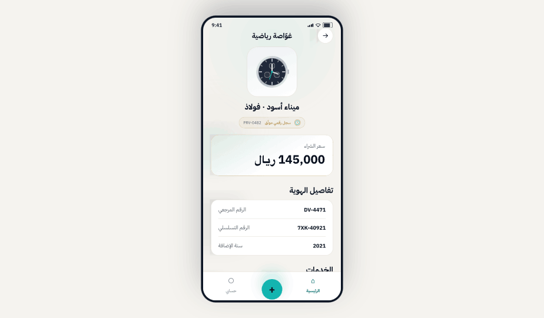
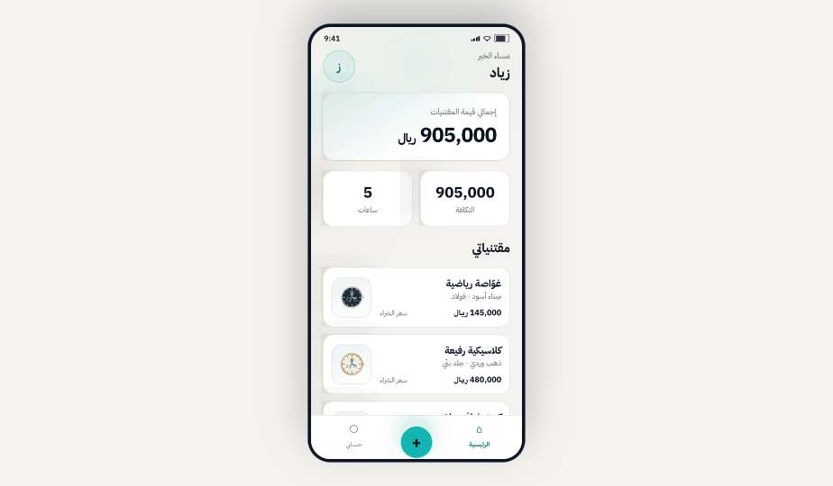
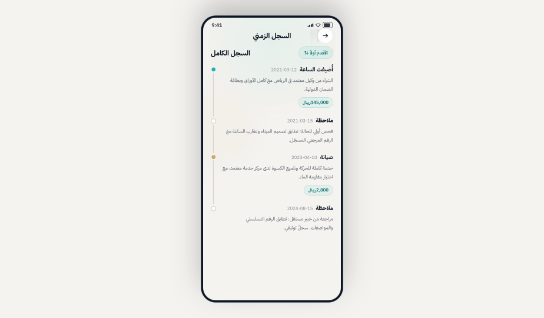
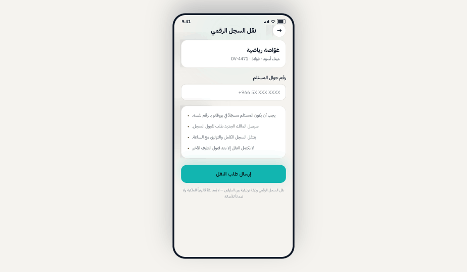

A digital record for every watch
Keep details, documents, receipts and photos together.

The watch record, quietly kept
Keep details, documents and the timeline together, then pass the complete story to the next collector.
Download on the App Store
Receipts get lost between drawers and files.
History remains in WhatsApp chats and memory.
The story can disappear when a watch changes hands.
Clear tools keep the story as it develops, from the first detail to the record transfer.
Keep details, documents, receipts and photos together.

Add each meaningful event when it happens, keeping the story in sequence.

Choose what appears on a public link without exposing private data.
Request an inspection from a partner workshop in Riyadh. The report is a technical opinion attributed to its technician and workshop.
Pass the record and its history to the next collector after they accept.

Enter its details, photos and documents.
Add events when they happen.
Create a watch profile on your terms.
Pass it to the next collector after acceptance.
Request an inspection from a partner workshop in Riyadh. The report records its scope and date, and presents a technical opinion attributed to a named technician and the workshop.
This report is a technical opinion reflecting the scope and date of the inspection, and does not constitute a warranty or a claim of authenticity.
You control your collection data. Decide what stays private and what appears in a watch profile, and delete your account from inside the app.
Its details, events and story, together in one place.
Download on the App Store